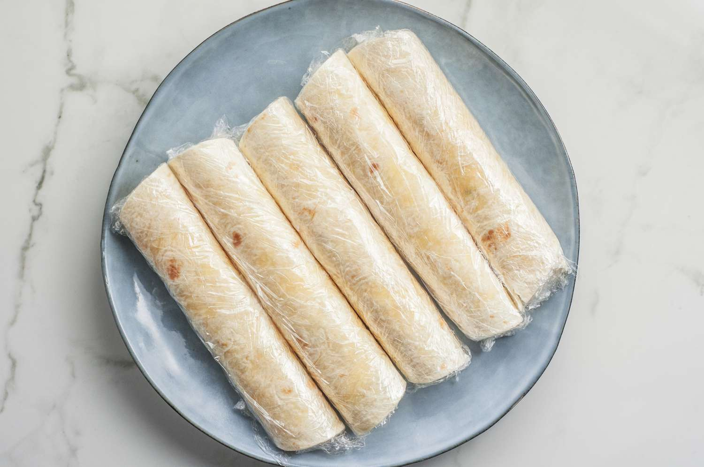

Tortilla Pizza Rolls

Pizza Rolls made with Tortillas
This recipe is a healthy high protein alternative to Totino's Pizza Rolls.
Each of these pizza roll packs 335 Cal, 28G of protein and 28G of carbs.
After making each batch you can store them in the freezer for future use.
Ingredients
- 6-10 Low Carb Tortillas
- 180G Turkey Pepperoni
- 300G Marinara Sauce
- 200G Blended Fat Free Cottage Cheese
- 80G 2% Shredded Mozzarella
- 80G Fat Free Mozzarella
Steps
- Set the oven to 450F
- Cut the Turkey Pepperoni into 1/4
- Mix the Turkey Pepperoni, Marinara Sauce, Cottage Cheese and both Mozzarella into a bowl.
- Take the mixture and put spoonful and a half on each tortilla
- Wrap up each Tortilla like you would a burrito
- Place the tortilla on a oven safe tray with parchment paper
- Cook in the oven for 8-14 minutes
Now it is up to you whether you want to eat them now or place them in the freezer and reheat later for 2-3 minutes.
[Home] [Next]